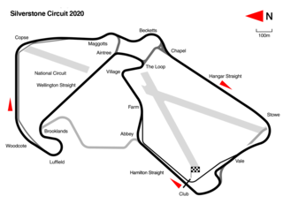
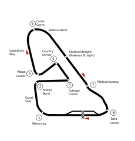
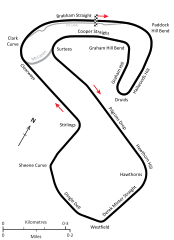
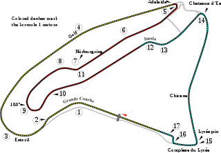
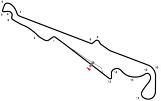
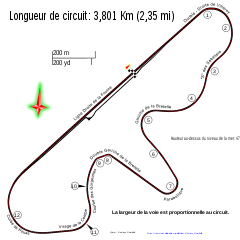
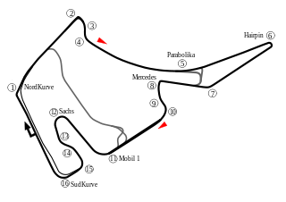
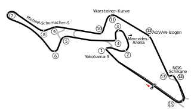
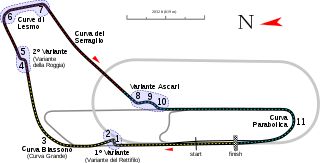
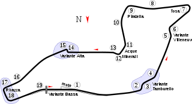

GRAND PRIX BY COUNTRY
As of the end of 2020, there have been 32 countries and 76 circuits that
have hosted a Formula One World Championship race.
Italy has hosted most Grand Prix (100). Formula One Group
has been trying to expand this sport to the world over the years, for
example, races in China, Russia, Malaysia and India; however, Europe and
North America remain the most popular places for this world's top-class
motorsport.
CONSTRUCTORS BY COUNTRY
As of the end of 2020, there have been 213 constructors that have entered
a Formula One Grand Prix. As the home of the sport,
the United Kingdom has the most constructors (86). 31 out
of 213 constructors had only participated in the Indianapolis 500 from
1950 to 1960, and all of them were American licensed. This also makes an
exceptional high home-winning rate: 28.21% for American teams. Another
outliner is the Canadian team Wolf, they won the only home Grand Prix that
they participated in, so the rate is 100% for Canada.
DRIVERS BY COUNTRY
As of the end of 2020, there have been 851 drivers that have participated
in a Formula One Grand Prix, and 165 of them are British. They have won 20
world titles and 299 races, and 29 out of 299 are at home soil.
Of all the countries that have not held a Grand Prix, Finnish drivers
have won the most races, and that number is 56.











British constructors have taken the most home Grand Prix victories (42
wins); however, the Italian team,
Ferrai is the most successful constructor in their home country, and they have won 27 times in Italy. Only four countries' constructors
have completed an achievement that winning a home race at more than one
circuit, these countries are the United Kingdom, France, Germany, and
Italy.
WINNING A HOME GRAND PRIX
Winning a home Grand Prix is an extremely difficult achievement, so most
home race winner has achieved it only once. German driver
Michael Schumacher has won the race in Germany for 9 times
at both Hockenheimring and Nürburgring. Because of the
unique history of the Indianapolis 500 in Formula One, most American winners are Indy 500 winners, so Mario Andretti is the
only "real" home Grand Prix winner from America.